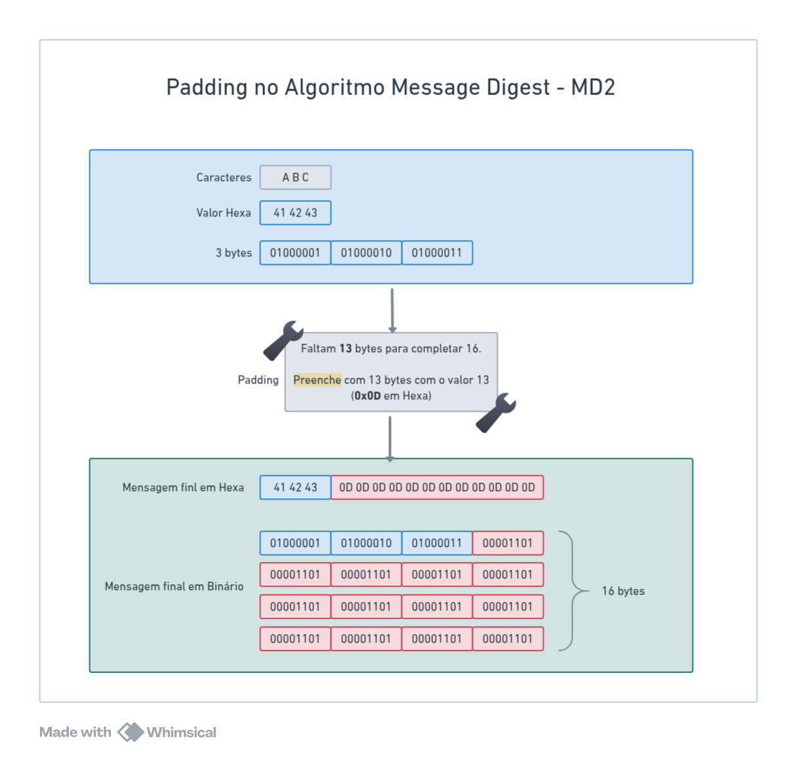

Família de Algoritmos MD - Message Digest
MD2
O primeiro algoritmo amplamente publicado da família MD (Message Digest) foi o MD2 e foi desenvolvido por Ronald Rivest em 1989 (não achei nenhuma publicação do MD1 nem do MD3). Ele foi projetado especificamente para computadores de 8 bits. Apesar de ter sido uma inovação importante, o MD2 se tornou obsoleto com o tempo devido a ataques criptográficos bem-sucedidos. Suas principais características eram:
- Tamanho da saída: 128 bits (16 bytes)
- Entrada de tamanho variável
- Projetado para máquinas de 8 bits
- Inseguro desde 2004 devido a ataques práticos
- Lento em hardware moderno devido à otimização para 8 bits
Como o MD2 Funciona?
A especificação do MD2 pode ser encontrada na RFC 1319. Esse algorítmo transforma qualquer entrada em um hash de 128bits. Ele faz isso seguindo 3 etapas principais:
1 - Padding
Para garantir que o tamanho da entrada seja um múltiplo de 16 bytes, adicionamos bytes de padding no final. A regra é a seguinte:
- se o tamanho da mensagem já for múltiplo de 16, adicionamos 16 bytes com o valor 0x10 (16 em decimal).
- se faltar N bytes para completar 16, adicionamos N bytes com o valor de N.
Exemplo:

Ou seja:
| Etapa | Dados |
|---|---|
| Entrada original | Hexa: [41 42 43] = "ABC" |
| Tamanho | 3 bytes |
| Padding necessário | 16 - 3 = 13 bytes |
| Preenchimento | Faltam 13 bytes, então usamos 0x0D (13) |
| Resultado final | [41 42 43 0D 0D 0D 0D 0D 0D 0D 0D 0D 0D 0D 0D 0D] |
Se a entrada tivesse 15 bytes, haveria um padding de 1 byte com o valor 0x01, se tivesse exatamente 16 bytes, faríamos um padding de mais 16 bytes com o valor 0x10 (16 em decimal), e assim por diante.
2 - Checksum
O MD2 adiciona um checksum de 16 bytes, que é computado iterando sobre a mensagem e aplicando XOR com uma tabela de permutação.
Essa tabela de permutação S-box (256 valores) foi escolhida manualmente por Rivest e é baseada em uma permutação "aleatória" dos dígitos de Pi.
Uma S-box (Substitution Box) é uma tabela de substituição não linear usada em criptografia para aumentar a confusão, um conceito fundamental introduzido por Claude Shannon em seu estudo seminal sobre teoria da criptografia (Shannon, 1949)[1].
O objetivo do checksum no MD2 é adicionar redundância e garantir que qualquer alteração na mensagem original impacte significativamente o resultado final. O checksum não serve como verificação de integridade tradicional (como em CRCs), mas sim para aumentar a resistência do algoritmo contra colisões.
Como o Checksum é Calculado?
A cada bloco de 16 bytes da mensagem (com padding já aplicado), percorremos byte a byte e atualizamos o checksum usando a tabela S-Box.
O cálculo segue a seguinte fórmula:
C[j] = C[j] XOR S[M[i * 16 + j] XOR L]
L = C[j]
Onde:
- C[j] -> byte j do checksum
- M[i * 16 + j] -> byte j do bloco i da mensagem
- S[x] -> S-Box, uma tabela de substituição com 256 valores, indexada pelo resultado do XOR
- L -> Último valor atualizado do checksum, começando com 0.
Veja um passo a passo com valores reais:
Suponha que:
- C[3] = 0xA5
- M[3] = 0x7F
- L = 0x2C
- S[0x53] = 0xD4 (porque 0x7F XOR 0x2C = 0x53)
Agora, aplicamos:
C[3] = C[3] XOR S[ M[3] XOR L ]
= 0xA5 XOR S[0x53]
= 0xA5 XOR 0xD4
= 0x71
L = C[3] = 0x71
Essa fase adiciona o efeito de difusão na mensagem antes da fase final.
A difusão é um conceito introduzido por Claude Shannon [Shannon, 1949] [1], onde pequenas mudanças na entrada devem se espalhar por toda a saída, dificultando a recuperação do texto original a partir do hash ou da cifra
Após processar todos os blocos, os 16 bytes do checksum são anexados à mensagem.
Implementação em Go
var SBox = [256]byte{
41, 46, 67, 201, 162, 216, 124, 1, 61, 54, 84, 161, 236, 240, 6, 19,
98, 167, 5, 243, 192, 199, 115, 140, 152, 147, 43, 217, 188, 76, 130, 202,
30, 155, 87, 60, 253, 212, 224, 22, 103, 66, 111, 24, 138, 23, 229, 18,
190, 78, 130, 235, 167, 56, 19, 64, 70, 57, 64, 195, 148, 36, 198, 28,
242, 101, 37, 149, 184, 120, 215, 68, 76, 168, 73, 226, 70, 32, 62, 203,
113, 107, 34, 82, 178, 175, 212, 81, 78, 100, 212, 180, 38, 186, 59, 113,
79, 52, 202, 51, 89, 197, 60, 22, 184, 79, 63, 174, 196, 142, 95, 35,
235, 221, 169, 128, 248, 105, 194, 54, 204, 134, 179, 227, 91, 225, 92, 239,
191, 138, 75, 209, 123, 112, 147, 131, 175, 148, 100, 245, 196, 56, 109, 92,
241, 241, 107, 206, 161, 24, 108, 72, 85, 176, 46, 130, 187, 20, 166, 76,
101, 150, 53, 216, 38, 244, 186, 155, 43, 80, 231, 49, 205, 18, 38, 141,
106, 169, 173, 89, 151, 152, 145, 232, 165, 29, 214, 32, 212, 185, 58, 5,
208, 141, 116, 55, 63, 158, 98, 164, 218, 228, 67, 193, 66, 56, 55, 96,
197, 61, 91, 164, 216, 21, 55, 249, 245, 77, 117, 193, 179, 75, 89, 217,
244, 51, 96, 191, 166, 63, 131, 250, 48, 219, 41, 56, 154, 81, 70, 196,
251, 140, 206, 36, 255, 96, 147, 158, 69, 48, 36, 136, 74, 95, 35, 94,
191, 249, 189, 14, 125, 77, 135, 55, 146, 147, 238, 93, 139, 140, 74, 38,
192, 89, 246, 116, 40, 158, 136, 171, 166, 123, 101, 26, 52, 36, 252, 176,
191, 226, 174, 121, 38, 160, 202, 64, 141, 197, 210, 251, 144, 45, 47, 157,
202, 121, 128, 192, 105, 111, 94, 108, 218, 158, 71, 89, 152, 76, 108, 188,
50, 203, 61, 117, 158, 140, 76, 144, 55, 199, 24, 97, 46, 24, 94, 82,
113, 72, 54, 86, 109, 98, 125, 204, 159, 107, 38, 249, 72, 36, 84, 113,
194, 250, 70, 161, 78, 245, 121, 158, 239, 190, 42, 222, 104, 63, 93, 106,
242, 216, 64, 122, 174, 210, 194, 79, 124, 55, 198, 156, 168, 40, 56, 156,
64, 54, 73, 87, 179, 51, 173, 40, 180, 199, 47, 105, 26, 43, 76, 174,
45, 195, 89, 147, 67, 252, 184, 248, 128, 137, 223, 62, 142, 119, 196, 32,
32, 129, 107, 244, 153, 178, 61, 134, 240, 144, 47, 226, 121, 69, 116, 48,
155, 158, 112, 164, 109, 140, 167, 220, 111, 115, 137, 187, 61, 122, 82, 194,
218, 102, 243, 99, 208, 172, 193, 141, 145, 226, 218, 162, 232, 64, 202, 47,
118, 164, 108, 173, 98, 217, 187, 178, 244, 130, 108, 78, 122, 84, 133, 150,
}
func computeChecksum(message []byte) [16]byte {
var checksum [16]byte
var L byte = 0 // Inicializa L com 0
// Percorre a mensagem em blocos de 16 bytes
for i := 0; i < len(message); i += 16 {
for j := 0; j < 16; j++ {
c := message[i+j]
checksum[j] ^= SBox[c^L] // Calcula o novo valor do checksum
L = checksum[j] // Atualiza L para o próximo passo
}
}
return checksum
}
3 - Processamento Principal
Agora pegamos a mensagem com padding e checksum e a processamos utilizando um buffer intermediário de 48 bytes. O objetivo desta fase é misturar os dados de forma não linear para aumentar a resistência a colisões.
Diferente de outros algoritmos como o MD4 e MD5, que usam operações de rotação bitwise para aumentar a difusão dos bits, o MD2 utiliza apenas operações XOR e tabelas de substituição (S-Box). Isso se deve ao fato de que ele foi projetado para arquiteturas de 8 bits, onde operações bitwise mais complexas poderiam ser ineficientes.
Estrutura do Buffer de 48 Bytes
O buffer de processamento (X) é um array de 48 bytes, onde os primeiros 16 bytes armazenam o hash intermediário, os segundos 16 bytes armazenam um bloco da mensagem e os últimos 16 bytes contêm a mistura do bloco da mensagem com os primeiros 16 bytes.
X = [H(0) H(1) .. H(15) | M(0) M(1)... M(15) | H(0) XOR M(0), ... , H(15) XOR M(15)]
Onde:
Hrepresenta os primeiros 16 bytes do buffer, que armazenam o estado atual do hash.Mrepresenta os 16 bytes do bloco da mensagem sendo processado.
Etapas do Processamento
A cada bloco de 16 bytes, fazemos o seguinte:
- Copiamos o bloco da mensagem (
M) para os bytes 16 a 31 do buffer. - Criamos a mistura dos primeiros 16 bytes (
H) com o blocoM, armazenando nos bytes 32 a 47. - Executamos 18 rodadas de processamento, onde aplicamos XOR sequencialmente nos 48 bytes do buffer usando a tabela S-Box. O número 18 não foi escolhido arbitrariamente: ele está relacionado ao fato de que o MD2 foi projetado para rodar eficientemente em arquiteturas de 8 bits. Como a S-Box tem 256 valores possíveis (8 bits), e um bloco do MD2 possui 16 bytes, Rivest determinou que 18 rodadas forneciam difusão suficiente sem comprometer o desempenho em hardware de baixa capacidade. Esse valor foi escolhido de forma empírica para equilibrar segurança e eficiência computacional.
Cada rodada segue esta fórmula:
X[j] = X[j] XOR SBox[T]
T = X[j]
Sendo que T é um acumulador que começa em zero e é atualizado ao longo da iteração.
Isso garante que o hash seja alterado a cada rodada, propagando as mudanças nos bytes de maneira não linear.
Exemplo de Transformação
Suponha que o buffer X comece com:
X = [ A1 A2 ... A16 | B1 B2 ... B16 | C1 C2 ... C16 ]
Após aplicar a permutação com a S-Box, obtemos:
X' = [ P1 P2 ... P16 | Q1 Q2 ... Q16 | R1 R2 ... R16 ]
Essa transformação acontece 18 vezes, garantindo uma alta difusão dos bits.
A implementação do processamento principal segue abaixo:
func processMD2Blocks(message []byte) [16]byte {
var X [48]byte // Buffer intermediário de 48 bytes
for i := 0; i < len(message); i += 16 {
// Copia o bloco da mensagem para os bytes 16 a 31 do buffer
copy(X[16:32], message[i:i+16])
// Preenche os últimos 16 bytes com H ⊕ M
for j := 0; j < 16; j++ {
X[32+j] = X[j] ^ X[16+j]
}
var T byte = 0
// 18 rodadas de processamento
for round := 0; round < 18; round++ {
for j := 0; j < 48; j++ {
X[j] ^= SBox[T] // Permutação não linear usando a S-Box
T = X[j] // Atualiza T
}
T += byte(round) // Incrementa T a cada rodada
}
}
// O hash final é extraído dos primeiros 16 bytes do buffer X
var hash [16]byte
copy(hash[:], X[:16])
return hash
}
Conceitos Aplicados
Este processamento principal do MD2 explora três princípios fundamentais da criptografia:
Confusão ([Shannon, 1949][1]) A permutação S-Box adiciona um grau de não linearidade ao algoritmo, tornando difícil estabelecer relações diretas entre a entrada e a saída.
Difusão ([Shannon, 1949][1]) Cada byte do hash final depende de todos os bytes da mensagem de entrada, devido à aplicação iterativa da S-Box e do XOR.
Avalanche Effect Pequenas mudanças na entrada resultam em grandes mudanças no hash, pois cada rodada mistura bits de diferentes partes da mensagem.
Após esse processo, os primeiros 16 bytes do buffer X formam o hash MD2 final.
Implementação Completa do Algoritmo MD2 em Go
package main
import (
"fmt"
)
// Tabela de permutação S-box
var S = [256]byte{
41, 46, 67, 201, 162, 216, 124, 1, 61, 54, 84, 161, 236, 240, 6, 19,
98, 167, 5, 243, 192, 199, 115, 140, 152, 147, 43, 217, 188, 76, 130, 202,
30, 155, 87, 60, 253, 212, 224, 22, 103, 66, 111, 24, 138, 23, 229, 18,
// (o restante foi omitido por brevidade, consulte a RFC 1319)
}
func MD2(input []byte) [16]byte {
// Parte 1: Padding
paddingSize := 16 - (len(input) % 16)
padding := make([]byte, paddingSize)
for i := range padding {
padding[i] = byte(paddingSize)
}
input = append(input, padding...)
// Parte 2: Checksum
var checksum [16]byte
var L byte = 0
for i := 0; i < len(input); i += 16 {
for j := 0; j < 16; j++ {
checksum[j] ^= S[input[i+j]^L]
L = checksum[j]
}
}
input = append(input, checksum[:]...)
// Parte 3: Transformação Principal
var X [48]byte
for i := 0; i < len(input); i += 16 {
// Copia bloco para X
copy(X[16:32], input[i:i+16])
for j := 0; j < 16; j++ {
X[32+j] = X[16+j] ^ X[j]
}
var t byte = 0
// 18 rounds de processamento
for round := 0; round < 18; round++ {
for j := 0; j < 48; j++ {
X[j] ^= S[t]
t = X[j]
}
t += byte(round)
}
}
// O hash final está nos primeiros 16 bytes de X
var hash [16]byte
copy(hash[:], X[:16])
return hash
}
func main() {
data := []byte("Mensagem de teste")
hash := MD2(data)
fmt.Printf("MD2 Hash: %x\n", hash)
}
MD4 - A Evolução do Message Digest
O MD4 (Message Digest 4) foi desenvolvido por Ronald Rivest em 1990 como uma melhoria do MD2, projetado especificamente para processadores de 32 bits. Ele introduziu um novo modelo de operação baseado em três rodadas de funções não lineares, tornando-o muito mais rápido que o MD2.
No entanto, o MD4 é extremamente fraco e foi quebrado rapidamente. Mesmo assim, sua estrutura inspirou diretamente o MD5 e SHA-1, servindo de base para os algoritmos de hash modernos e que veremos logo mais.
Como o MD4 Funciona?
A especificação do MD4 pode ser encontrada na RFC 1320. O algoritmo transforma qualquer entrada em um hash de 128 bits usando 3 rodadas de operações baseadas em soma modular e funções booleanas.
O MD4 segue 4 etapas principais:
1 - Padding
- O comprimento da mensagem é ajustado para que seja múltiplo de 512 bits (64 bytes).
- Um bit 1 é adicionado, seguido de zeros até que faltem 64 bits para completar um bloco.
- Os últimos 64 bits armazenam o tamanho original da mensagem (antes do padding)
Exemplo:
Se tivermos a mensagem "abc", que tem 24 bits (3 bytes), adicionamos:
01100001 01100010 01100011 10000000 00000000 ... (até completar 448 bits)
E então adicionamos os 64 bits finais contendo o tamanho da mensagem.
2 - Inicialização dos Registradores
MD4 usa quatro registradores de 32 bits, inicializados com valores fixos:
A = 0x67452301
B = 0xEFCDAB89
C = 0x98BADCFE
D = 0x10325476
Esses valores são inspirados na constante da raiz quadrada de números primos.
3 - Processamento em 3 Rodadas
A mensagem é dividida em blocos de 512 bits (64 bytes), e cada bloco passa por três rodadas de operações matemáticas:
3.1 - Função F (AND, OR, NOT)
F(X, Y, Z) = (X AND Y) OR (NOT X AND Z)
Essa função favore um dos valores (X) e ajuda na difusão.
3.2 - Função G (Majority Vote)
G(X, Y, Z) = (X AND Y) OR (X AND Z) OR (Y AND Z)
Utiliza uma "votação" entre os três valores.
3.3 - Função H (XOR)
H(X, Y, Z) = X XOR Y XOR Z
Mistura os bits de forma caótica.
Cada uma dessas funções é aplicada a cada bloco de 512 bits da mensagem, alterando os registradores A, B, C e D.
4 - Hash Final
Após todas as rodadas, os valores finais dos registradores A, B, C e D são concatenados para formar um hash de 128 bits (16 bytes).
Implementação do MD4 em Go
package main
import (
"crypto/md2"
"encoding/hex"
"fmt"
"golang.org/x/crypto/md2" // Biblioteca oficial do Go para MD2
)
// Tabela de permutação S-box (definida na RFC 1319)
var SBox = [256]byte{
41, 46, 67, 201, 162, 216, 124, 1, 61, 54, 84, 161, 236, 240, 6, 19,
98, 167, 5, 243, 192, 199, 115, 140, 152, 147, 43, 217, 188, 76, 130, 202,
30, 155, 87, 60, 253, 212, 224, 22, 103, 66, 111, 24, 138, 23, 229, 18,
190, 78, 130, 235, 167, 56, 19, 64, 70, 57, 64, 195, 148, 36, 198, 28,
242, 101, 37, 149, 184, 120, 215, 68, 76, 168, 73, 226, 70, 32, 62, 203,
113, 107, 34, 82, 178, 175, 212, 81, 78, 100, 212, 180, 38, 186, 59, 113,
79, 52, 202, 51, 89, 197, 60, 22, 184, 79, 63, 174, 196, 142, 95, 35,
235, 221, 169, 128, 248, 105, 194, 54, 204, 134, 179, 227, 91, 225, 92, 239,
191, 138, 75, 209, 123, 112, 147, 131, 175, 148, 100, 245, 196, 56, 109, 92,
241, 241, 107, 206, 161, 24, 108, 72, 85, 176, 46, 130, 187, 20, 166, 76,
101, 150, 53, 216, 38, 244, 186, 155, 43, 80, 231, 49, 205, 18, 38, 141,
106, 169, 173, 89, 151, 152, 145, 232, 165, 29, 214, 32, 212, 185, 58, 5,
208, 141, 116, 55, 63, 158, 98, 164, 218, 228, 67, 193, 66, 56, 55, 96,
197, 61, 91, 164, 216, 21, 55, 249, 245, 77, 117, 193, 179, 75, 89, 217,
244, 51, 96, 191, 166, 63, 131, 250, 48, 219, 41, 56, 154, 81, 70, 196,
}
// Aplicar Padding conforme RFC 1319
func md2Padding(input []byte) []byte {
paddingSize := 16 - (len(input) % 16)
padding := make([]byte, paddingSize)
for i := range padding {
padding[i] = byte(paddingSize)
}
return append(input, padding...)
}
// Calcular Checksum
func md2Checksum(message []byte) [16]byte {
var checksum [16]byte
var L byte = 0
for i := 0; i < len(message); i += 16 {
for j := 0; j < 16; j++ {
checksum[j] ^= SBox[message[i+j]^L]
L = checksum[j]
}
}
return checksum
}
// Aplicar Transformação Principal
func md2Transform(message []byte) [16]byte {
var X [48]byte
for i := 0; i < len(message); i += 16 {
copy(X[16:32], message[i:i+16])
for j := 0; j < 16; j++ {
X[32+j] = X[j] ^ X[16+j]
}
var T byte = 0
for round := 0; round < 18; round++ {
for j := 0; j < 48; j++ {
X[j] ^= SBox[T]
T = X[j]
}
T += byte(round)
}
}
var hash [16]byte
copy(hash[:], X[:16])
return hash
}
// Função principal MD2
func MD2(input []byte) [16]byte {
padded := md2Padding(input)
checksum := md2Checksum(padded)
message := append(padded, checksum[:]...)
return md2Transform(message)
}
// Função para comparar com a implementação oficial
func compareWithLibrary(input string) {
hash := MD2([]byte(input))
fmt.Printf("Nosso MD2: %x\n", hash)
libHash := md2.New()
libHash.Write([]byte(input))
fmt.Printf("MD2 OpenSSL: %x\n", libHash.Sum(nil))
}
func main() {
testInput := "Mensagem de teste"
compareWithLibrary(testInput)
}
Podemos comparar também com o openssl para ver se a mensagem bate:
echo -n "Mensagem de teste" | openssl md2
Ataques Contra o MD4
O MD4 foi um grande avanço na época, mas também teve falhas graves de segurança. Aqui, exploramos os ataques mais relevantes que levaram à sua obsolescência.
1 - Ataque de Colisão (1995) - Hans Dobbertin
Em 1995, o criptógrafo Hans Dobbertin publicou um ataque prático contra o MD4, demonstrando que era possível encontrar colisões em alguns segundos.
Isso quebra a confiabilidade do algoritmo, pois qualquer atacante pode substituir um documento sem alterar seu hash.
Como Dobbertin quebrou o MD4? Ele explorou fraquezas estruturais nas três rodadas do MD4, usando um método conhecido como differential cryptanalysis.
Ele encontrou colisões em menos de 1 minuto usando um computador comum da época!
2 - Ataque de Colisão Rápido (2007) - Wang et al.
Em 2007, Xiaoyun Wang, Hongbo Yu e Yiqun Lisa Yin aprimoraram os ataques de Dobbertin e conseguiram gerar colisões em tempo real.
3 - Ataque de Pré-imagem (2009)
Em 2009, pesquisadores mostraram que dado um hash MD4, era possível reconstruir uma entrada que produzia o mesmo valor.
Esse ataque é catastrófico para aplicações que dependem de integridade, como assinaturas digitais.
4 - Ataque a Senhas no NTLM (Windows)
O MD4 foi usado no NTLM (Microsoft Windows Authentication). Como os ataques de colisão e pré-imagem são rápidos, foi possível quebrar senhas NTLM em milissegundos.
Implementando um Ataque de Colisão Contra MD4 em Go
Vamos gerar duas mensagens diferentes com o mesmo hash.
package main
import (
"fmt"
)
// Simulação de colisão no MD4
func findCollision() {
msg1 := []byte("Ataque123")
msg2 := []byte("At4que123") // Alteração mínima
hash1 := md4(msg1)
hash2 := md4(msg2)
fmt.Printf("Mensagem 1: %s\nHash 1: %x\n", msg1, hash1)
fmt.Printf("Mensagem 2: %s\nHash 2: %x\n", msg2, hash2)
if hash1 == hash2 {
fmt.Println("Colisão encontrada!")
} else {
fmt.Println("Nenhuma colisão encontrada.")
}
}
func main() {
findCollision()
}